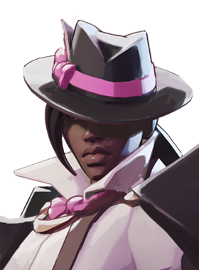
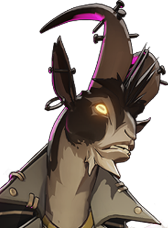
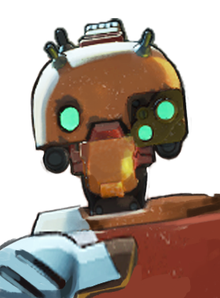

Herói recente do elenco, com perfil de apoio místico.
História
Um passageiro clandestino acidental do mundo dos sonhos, Rem se viu preso na cidade que nunca dorme. Impulsionados por sua natureza curiosa, Rem e seus amigos prestativos foram vistos vagando pelos cinco distritos em busca de um caminho de volta para casa.
Então, se você cochilar enquanto pega a linha Azul do trabalho para casa, talvez você tenha acabado de se encontrar com um dos mais novos habitantes da Maçã Amaldiçoada.
História oficial do jogo, traduzida automaticamente para o português.
Números reais
Habilidades
Lança um travesseiro que causa dano espiritual e grande repulsão; acertos reduzem a recarga das suas outras habilidades.
Pula até um aliado e tira uma soneca ao lado dele, dando a ambos uma cura imediata baseada na vida perdida, seguida de regeneração.
Envia ajudantes para coletar caixas, fazer Sacrifícios do Pecador ou seguir heróis ou tropas para dar bônus ou cura.
Canaliza um olhar através de paredes e pisos que retarda inimigos e depois os faz dormir; ao acordarem, sofrem dano espiritual.
Builds mais usadas
6.113 partidas registradas com esta build.
Rodadas de alta velocidade (800) · Rodadas de Abertura (1.600) · Grão (800) · Frente Fria (1.600) · Taxa Extra (800) · Ala dos Guardiões (1.600) · Rodadas Monstruosas (800) · Barril Enferrujado (800) · Rito de Cura (800) · Medalhão Restaurador (1.600)
5.315 partidas registradas com esta build.
Perto (800) · Espírito Extra (800) · Taxa Extra (800) · Emblema do Encantador (1.600) · Colecionador de Troféus (1.600) · Healbane (1.600) · Recarga rápida (3.200) · Expansão Mística (800) · Cura Nova (3.200) · Feixe de resgate (3.200)
4.142 partidas registradas com esta build.
Espírito Extra (800) · Taxa Extra (800) · Grão (800) · Expansão Mística (800) · Explosão Mística (800) · Espírito Melhorado (1.600) · Ala dos Guardiões (1.600) · Tiro Místico (1.600) · Recarregando corrida (1.600) · Rito de Cura (800)
Confrontos reais
 Mirage — 53.1% de vitória
Mirage — 53.1% de vitória Shiv — 52.5% de vitória
Shiv — 52.5% de vitória Deadman Danny — 52.3% de vitória
Deadman Danny — 52.3% de vitória Viscous — 52.2% de vitória
Viscous — 52.2% de vitória Pocket — 51.9% de vitória
Pocket — 51.9% de vitória Paradox — 51.8% de vitória
Paradox — 51.8% de vitória
 Graves — 40.0% de vitória
Graves — 40.0% de vitória Rat King — 40.3% de vitória
Rat King — 40.3% de vitória Seven — 40.5% de vitória
Seven — 40.5% de vitória Victor — 42.0% de vitória
Victor — 42.0% de vitória Paige — 42.1% de vitória
Paige — 42.1% de vitória Haze — 43.1% de vitória
Haze — 43.1% de vitória
O que upar primeiro
Nível por nível, na ordem que os jogadores mais usam em partidas de verdade. A porcentagem mostra quantos escolheram aquela habilidade naquele nível.
Melhores duplas
Heróis que mais ganham jogando junto com ele, em partidas reais (pelo menos 1.500 partidas juntos).
- Rat King56,0%
- Paige54,2%
- Graves52,9%
- Seven52,6%
 Kelvin51,8%
Kelvin51,8%
- Deadman Danny41,0%
 Solomon41,9%
Solomon41,9%- Paradox42,0%
Rota (lane)
Na rota, cada lado joga em dupla. Estes números são de confrontos reais: a diferença de almas é medida com o jogo já começado, então almas no verde significa que ele costuma estar na frente.
- Graves — 36,3% de vitória +282 almas (2.264 partidas)

Wraith — 36,3% de vitória +89 almas (259 partidas) Dynamo — 37,5% de vitória +417 almas (760 partidas)
Dynamo — 37,5% de vitória +417 almas (760 partidas)- Seven — 37,6% de vitória +164 almas (939 partidas)
- Victor — 38,2% de vitória +53 almas (474 partidas)
- Haze — 39,4% de vitória −375 almas (4.127 partidas)

Billy — 39,4% de vitória +133 almas (170 partidas)- Rat King — 39,8% de vitória −318 almas (9.658 partidas)
- Solomon — 48,9% de vitória +476 almas (589 partidas)

Bebop — 48,9% de vitória +29 almas (1.721 partidas)- Shiv — 47,9% de vitória +507 almas (311 partidas)
Histórico de win rate
25/01: 47.4% → 22/02: 50.3% → 22/03: 45.8% → 19/04: 46.8% → 17/05: 46.1% → 14/06: 49.4% → 12/07: 46.7% → 09/08: 47.1% → 06/09: 48.0% → 04/10: 46.8%